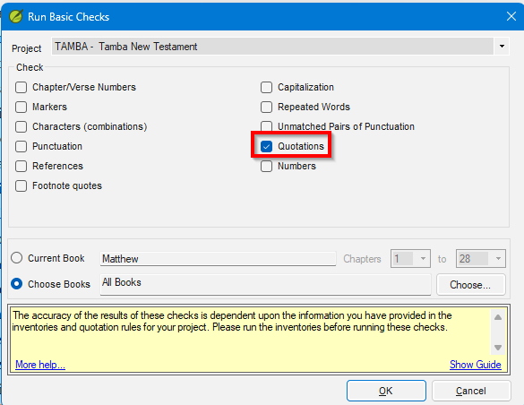
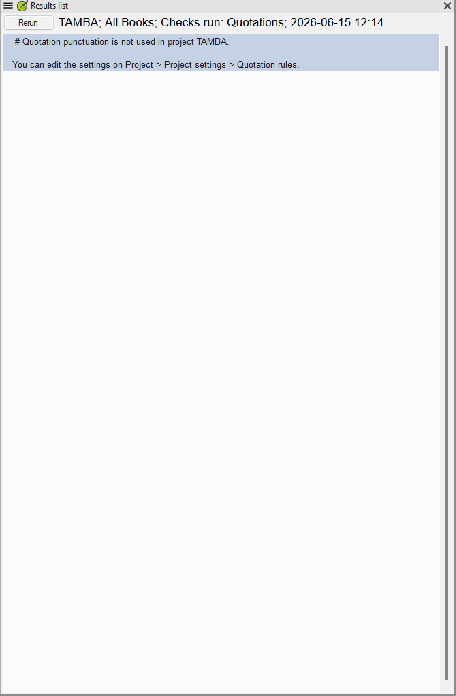

Lesson 1 — What the Quotation Check Does¶
Estimated time: 30 minutes
Purpose: On a real project you will often be handed a Quotation check that is either screaming with errors or silent — and a translation team asking what it means. Before you can help, you have to recognize when the check's results are meaningless because it has not been configured yet, and be able to explain that to the team. This lesson prepares you for that first conversation.
This lesson uses the fictional Tamba New Testament (
tamba) project. See the course README for the Tamba quotation conventions and Prerequisites for setup.
Learning objectives¶
By the end of this lesson you will be able to:
- Explain why the Quotation check cannot produce trustworthy results before it is configured.
- Name the two inputs Paratext needs — the Quote marks inventory and the quotation rules — before the check is meaningful.
- Run the check on an unconfigured project and judge why its results are noise, not a starting baseline.
Connect¶
Think about the language project you work with — or one you have seen a colleague support.
✏️ Reflection. Bring to mind a time you ran an automated check (spelling, punctuation, basic checks) and it either flooded the screen with results or returned nothing at all.
- What did you do first — start fixing the results, or step back and ask whether the check was even set up correctly?
- How did you decide whether the results could be trusted?
- If a translator asked you "does zero errors mean my quotation marks are perfect?", what would you say?
Hold those answers. This lesson is about telling the difference between a check that has found nothing wrong and a check that doesn't yet know what to look for.
Content¶
Configuring and troubleshooting a project's checks is core to the Translation Tools competency — being able to "use translation tools and troubleshoot issues that arise." The Quotation check is a good first case because its results are worthless until you have given it two specific pieces of information, and recognizing that is half the skill.
Paratext's Quotation check (☰ > Tools > Run basic checks... > Quotations) scans your translation for unmatched, unopened, or incorrectly nested quotation marks. Before it can do this it needs two things:
- Quote marks tab — which characters in your text are quotation marks, and at what level (Opening, Quote Continuer at new paragraph, Closing for each level).
- Quotation types tab — for each semantic category of speech, whether marks are required, forbidden, or optional.
If neither is configured, the check either fires on every verse or fires on nothing — both are useless. An unconfigured check is not a starting baseline; it is noise.
NOTE Zero results on an unconfigured project does not mean the translation has no quotation errors. It means Paratext does not know which characters to look for, so it is not finding marks — not confirming their absence. The check is reporting silence, not correctness.
Key takeaways
- The Quotation check needs both the Quote marks tab (which characters are quote marks) and the Quotation types tab (when marks are expected) before it gives trustworthy results.
- Don't interpret or fix results until configuration is complete — you would be chasing noise.
Challenge¶
Exercise 1.1 — Observe an unconfigured check¶
The situation. You are supporting the Tamba New Testament team. The team lead has run the Quotations check for the first time, seen the results, and messaged you: "The quotation check is giving me hundreds of errors — is our punctuation really this bad?" Your job is to see for yourself what the check reports on an unconfigured project, and then write the team lead a short, honest explanation.
Do it in Paratext:
- Open the
tambaproject. - Click ☰ > Tools > Run basic checks...
- In the dialog, tick Quotations only (leave "Quotation types" unticked — it is a separate check).
- Click Choose Books and select all NT books available in the
tambaproject, then click OK. This runs the check across the whole project so you can see the full scope of the problem.
NOTE A yellow information bar at the bottom of the dialog reads "The accuracy of the results of these checks is dependent upon the information you have provided in the inventories and quotation rules for your project." This is expected — the point of this challenge is that the check cannot give accurate results until it is configured.

- Look at the results list.

TIP For all configuration work in Lessons 2–4, use Current Book in the Run basic checks dialog and keep Matthew open — it has heavy, representative dialogue and keeps results manageable. Switch to Choose Books and expand to the full NT only after Matthew is clean.
✏️ Discovery prompts (answer these before you write anything):
- What does the panel actually report? Is that the same thing as "no quotation errors were found"?
- The notice points you to Project settings > Quotation rules. What is Paratext missing before it can examine the text at all?
- The team lead in the scenario above saw hundreds of errors on their project; this project shows none. How can the same check produce both — and is either result trustworthy?
What you should observe: confirmed on a real Paratext 9.5 build, the check declines to run on a truly unconfigured project — the panel shows no results, only the notice "Quotation punctuation is not used in project TAMBA." That is silence, not a clean bill of health. A project whose settings are wrong rather than missing (like the team lead's) fails the opposite way: a flood of false positives. Either way the results are not trustworthy until the Quote marks tab describes the language.
✏️ Produce this (a mentor will review it). Write the team lead a 2–3 sentence reply that (a) answers whether the errors mean their punctuation is bad, and (b) says what has to happen before the check can be trusted. Keep it plain enough for a non-technical translator to understand.
Change¶
Self-assessment — can you explain it to a colleague?
- The Quotations check runs on an unconfigured project and returns zero results. Does this mean the translation has no quotation errors?
- What are the two things Paratext needs before the Quotations check gives meaningful results?
- Why start with Matthew when working through check results during configuration, rather than running the check on the whole NT at once?
You should be able to say: (1) No — zero results on an unconfigured project means Paratext does not know which characters to look for; it is reporting silence, not correctness. (2) The Quote marks tab (which characters are quote marks and at what level) and the Quotation types tab (whether each category of speech requires, forbids, or optionally allows marks). (3) Matthew has heavy, representative dialogue with clear nesting; one book keeps results manageable and lets you confirm each fix before expanding scope.
✏️ Take it to your context. Name one real project you support (or expect to). Does the team know whether its quotation checking is configured? Write down one sentence you would use to set their expectations before running the check for the first time.
Next step. In Lesson 2 you will give Paratext the first of the two inputs it needs — you will open the Quote marks tab and enter Tamba's actual quotation characters, so the check finally has something meaningful to look for.